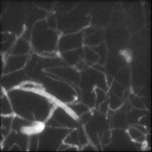

| Neural Calibration of Flourence Microscopy | |||
| Christina Wang | |||
| Final project for 6.8300, MIT | |||
Methodology
3.1 Data and Preprocessing
We base our experiments on the MiniVess dataset [10], which contains 70 3D two‑photon fluorescence microscopy volumes of mouse cerebral vasculature. Each raw volume is provided as a NIfTI file of size 512 × 512 × Z voxels with varying depth Z. To obtain a dataset suitable for learning a forward operator with fixed input size, we apply the following pre‑processing steps:
- Z‑normalization: For each volume we clip along the axial dimension to a common depth z = 33 slices. Volumes with fewer slices are discarded; volumes with more slices are either center‑cropped in z, or split into multiple chunks if Z >= 2z.
- XY cropping: To reduce memory and increase the number of effective training examples, we crop each 512 × 512 field of view into four non‑overlapping 256 × 256 patches. Each patch is treated as an independent 3D volume of size 33 × 256 × 256.
- Intensity normalization: Within each 3D patch, we normalize the voxel intensities by the maximum value in that patch, so that inputs to the network lie roughly in [0,1].
Below are 2 video examples of a processed 3D chunk, rendered and viewed by Napari.
After pre‑processing, the training set consists of N volumes V(i) ∈ RZ × H × W with Z = 33 and H = W = 256. We randomly split these into 80% training and 20% validation volumes, and use the same indices to construct ideal (noise‑free) and noisy (device‑like) targets for evaluation.
3.2 PSF-Based Forward Simulation
To simulate the microscope forward operator we use a measured 3D point spread function (PSF) h(x,y,z) obtained from a MATLAB calibration pipeline for a Bessel‑like beam, originally modified from the optics simulation code from Zhao et. al's paper [6]. The PSF is stored as a MATLAB .mat file with dimensions Zpsf × Hpsf × Wpsf. Below is the example PSF beam we trained upon. It is a long and thin beam with variable intensity in Z.
We transpose axes as needed to match the volume convention and normalize by its maximum value. For a given volume V, we approximate the continuous 3D convolution
(V * h)(x,y,z) = ∑x',y',z' V(x',y',z') h(x-x',y-y',z-z')
using a slice‑by‑slice FFT‑based implementation. For each axial slice z = 1, …, Z, we compute
- Zero‑pad the volume slice Vz(y,x) and the corresponding PSF slice hz(y,x) into larger arrays A and B.
- Compute C = ℱ-1(ℱ(A) ċ ℱ(B)), where ℱ denotes the 2D Fourier transform.
- Crop the central H × W region of C to obtain the convolved slice.
Summing over z yields an ideal 2D projection:
U(y,x) = ∑{z=1}^{Z} (V * h)z(y,x).
Because FFT‑based linear convolution with zero padding tends to darken the outermost pixels, we optionally crop a thin border from the projection and pad it back using edge replication to reduce visible boundary artifacts, while keeping the output size fixed at 256 × 256.
3.3 Static Warp and Noise Model
Real microscopes exhibit geometric distortions due to lens aberrations, scan non‑linearities, and imperfect alignment. We introduce a simple static warp W : (x,y) → (x',y') to mimic this behavior. In normalized coordinates (x,y) ∈ [-1,1]^2, we use a radial barrel/pincushion model
r = √(x2 + y2), (x',y') = (x,y) (1 + k r2),
where k controls the strength and sign of the distortion (k > 0 for barrel, k < 0 for pincushion).
We apply this warp using scipy.ndimage.map_coordinates with reflective boundary conditions and a smooth falloff toward the image edges to produce a device‑like warped version of the ideal image: Uw(y,x) = U(W(x,y)).
To approximate acquisition noise, we apply three additional perturbations:
- Per‑frame gain fluctuation: multiply the image by a global random factor g ∼ N(1, σg2)
- Per‑line jitter: for each scan line y, apply a small random lateral shift Δxy ∼ N(0,σj2) using linear interpolation, representing mechanical or timing jitter during scanning.
- Photon and read noise: interpret the intensity as an expected photon count, draw from a Poisson distribution, and add a small Gaussian read noise: C ∼ Poisson(λ = s Uw), I = C + N(0,σr2), then rescale by 1/s.
The final synthetic measurement I(y,x) serves as the target for learning the device‑like forward operator. In addition, we retain U(y,x) as an ideal, unwarped reference image for analysis.
Below is one example of comparison between an ideal image and a warped image.

.png)
Figure 1: Example of an ideal beam scan (left) and a optic warped beam projection (right), with k = 0.2
3.4 Neural Network Models
3.4.1 Baseline 3D–2D CNN
Our baseline model is a compact 3D–2D convolutional network that directly maps a volume V ∈ R1 × Z × H × W to a 2D image Î ∈ R1 × H × W. The architecture consists of:
- Two 3D convolutional layers with kernel size 3×3×3 and ReLU activations, producing a feature map of size C × Z × H × W.
- Global average pooling along the axial dimension Z, yielding a 2D feature map C × H × W.
- Two 2D convolutional layers with ReLU activations, followed by a final 2D convolution to produce a single‑channel output image.
The model is trained to minimize a combination of L1 and L2 losses between its prediction Î and the synthetic measurement I:
Lpixel(Î, I) = α ‖Î - I‖1 + (1 - α) ‖Î - I‖22.
with α = 0.5 in our experiments. This baseline implicitly attempts to learn both the PSF‑based blur and any static warp present in the data, using only local convolutions and finite receptive fields.
3.4.2 CNN with Explicit Warp Module
To better reflect the structure of the physical forward operator, we introduce a second model that explicitly factorizes optical warp. A shared 3D–2D CNN backbone Fθ first predicts an unwarped image Û = Fθ(V). A separate coordinate‑based MLP Gφ takes sinusoidal coordinate encodings (x,y) ∈ [-1,1]^2 and outputs a displacement field (Δx,Δy). The final prediction is obtained by sampling Û at the warped coordinates using a differentiable resampler:
Î(x,y) = Û(x + Δx(x,y),y + Δy(x,y)).
In practice, we implement Gφ as a small MLP with one hidden layer of width 16 and tanh activations, and use torch.nn.functional.grid_sample to apply the warp. The model is trained end‑to‑end with the same pixelwise loss as the baseline.
During evaluation, we compare both the warped prediction Î against the noisy, warped target I and the unwarped prediction Û against the ideal target U, allowing us to separately assess how well the model learns the photometric and geometric components of the forward operator.
3.5 Training Details
All models are implemented in PyTorch and trained with the Adam optimizer using a learning rate 10−3, batch size 2, 100 epochs for the basic CNN, and 250 epochs for the CNN with the warp module. We monitor the validation loss and Pearson correlation between predictions and targets, and select the checkpoint with the lowest validation loss for detailed analysis. Unless otherwise noted, no additional data augmentation beyond the cropping described in Section 3.1 is applied.